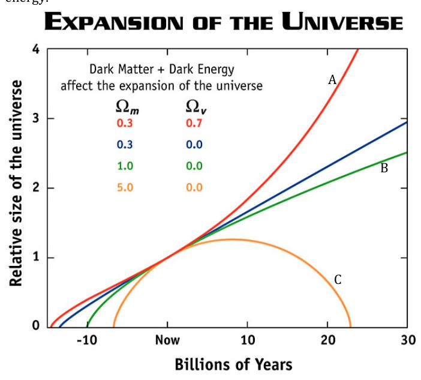

4.1 The end of the Universe
Depending on the mass/energy density of the Universe, there are three possible ways it could end:
- Large density: the Universe is pulled back in.
- Low density: the Universe keeps expanding.
- "Goldilocks" density: just right.
Large density: the Big Crunch. If the density is large enough, gravity will stop the expansion and eventually pull everything back in: a reverse Big Bang.
Low density: the Big Rip. If the density is low, gravity is too weak to stop the expansion. The Universe keeps expanding faster and faster until it rips apart, tearing apart even atoms and subatomic particles.
Goldilocks density: the Big Freeze. If the density is just right, the Universe keeps expanding, but more slowly. Everything becomes so spread out, and stars run out of fuel, until only black holes remain. They eventually evaporate, leaving the Universe empty of matter and energy, with no heat left: the Heat Death of the Universe.
Current observations of the Universe's mass/energy density suggest the Big Freeze is most likely. Don't worry though: it won't happen for another 10100 years!
| Scenario | Density level | Final outcome | Analogy |
|---|---|---|---|
| Big Crunch | High | Collapse | A ball thrown up that falls back down |
| Big Rip | Low | Shredded atoms | A balloon blown up until it pops |
| Big Freeze | Just right | Cold | A cup of coffee left out until it reaches room temperature |
Question 4.1.1

- The curve that best matches the Big Rip Universe:
- The curve that best matches a Universe with very high matter density:
- The curve that best matches the Universe our current observations suggest is most likely:
A expands faster and faster (Big Rip); C expands then collapses (Big Crunch); B keeps expanding steadily (Big Freeze).